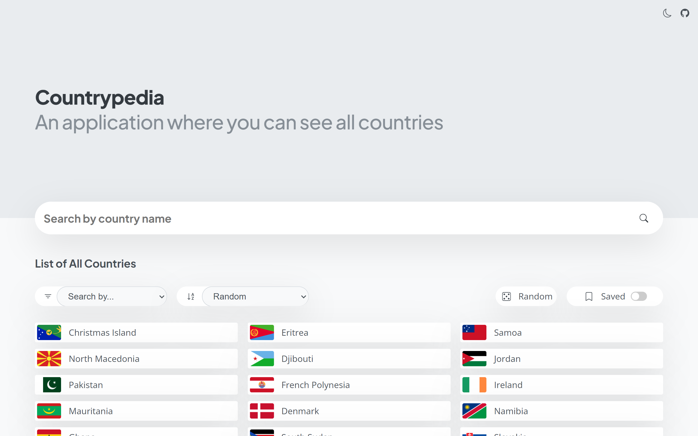

An application where you can find information about countries.

NOTE: Countrypedia currently does not work properly because the REST Countries API it depends on has moved to v5. v4 and earlier endpoints are no longer available, and v5 requires an API key. I will fix this later.
Countrypedia is an application where you can see all the countries, search among these countries, and get information about the country you choose, such as the country's name, flag, coat of arms, currency, border countries, capital, which continent it is located on, telephone code, population, location on the map (and more).
You can search between countries not only by name, but also by capital, currency, language spoken, etc. you can search. Apart from this, you can sort the countries alphabetically or randomly (as they come), select a random country by clicking the random button, mark the countries you want as bookmarks and use Countrypedia in dark mode.
Countrypedia is a VanillaJS application. In other words, Countrypedia is a JavaScript application that does not use any frameworks or libraries. Countrypedia uses the restcountries.com API to get country information, Leaflet to display the country on the map, SCSS for design.
While I was still in the process of learning JavaScript, I was watching a course on JavaScript on Udemy (Jonas Schmedtmann's Complete JavaScript course). During the course, a country-related API (restcountries.com) was used to learn asynchronous operations (such as async/await). After finishing the course, I wanted to make a serious VanillaJS application. Since I am interested in countries and it is an easy-to-use and well-developed API, I wanted to take the level of what can be done with this API one step further and created Countrypedia v1. In the first version, you could only list countries, search for countries only by their names, learn the information of the specific country you selected, and use dark mode. The first version had the trio of HTML, CSS, and JavaScript. I released Countrypedia v2 within 1 year, and this version was basically just a design change. New features (alphabetical sorting, searching for countries by other categories, adding the country as a bookmark, viewing the country on the map, etc.) were added after v2 was released. Also, in v2, CSS has been replaced with SCSS.
I plan to write the project from scratch with React and ChakraUI in 2023. This time I want to make improvements on both UI and UX side. Also, if the v4 version of the REST Countries API is released before this process is completed, I can add new information and write the object structures more easily in the project.
When I first wrote v2, it was actually just a design change, I added almost all of the features I mentioned in the What's new in v2 section below by patching it on the project. This caused the project to be written more cleanly at first, but later the code became harder to understand and the MVC structure was broken. Moreover, the URL based navigation I developed especially for phones caused new bugs. Some bugs I've discovered so far:
-> When you click on the Random button (the one with the 5 dot dice symbol), "cca3 codes" appear instead of the "full name" of the countries in the Borders section of the countries (When you select a country yourself, this part appears correctly)
-> Regarding URL navigation: If the user exits the detailsView (closes the modal window) or returns to the main page using only the buttons or just the back button of the phone & PC after opening the site, it's fine. However, if it does both at once, the return function doesn't work as expected (needs to press go back button on browser or navigation drawer all the time).
So the point I want to focus on in v3 will be developability and user experience (UX) rather than design. I will use ChakraUI (probably) as design and write the project with React. As the project grows, it becomes harder to write and add/remove with VanillaJS (also error-prone), while React is quite flexible.
From this point on I will not add any new features to v2, only bug fixes and package updates (Max until end of 2024). I will also add a new section to the README.md file for v3. I will develop v3 on the development branch before fully releasing it. You can also review the new README.md. When it reaches a certain stage, the preview link will be shared. Also the to-do list for v3 is shown in this file.